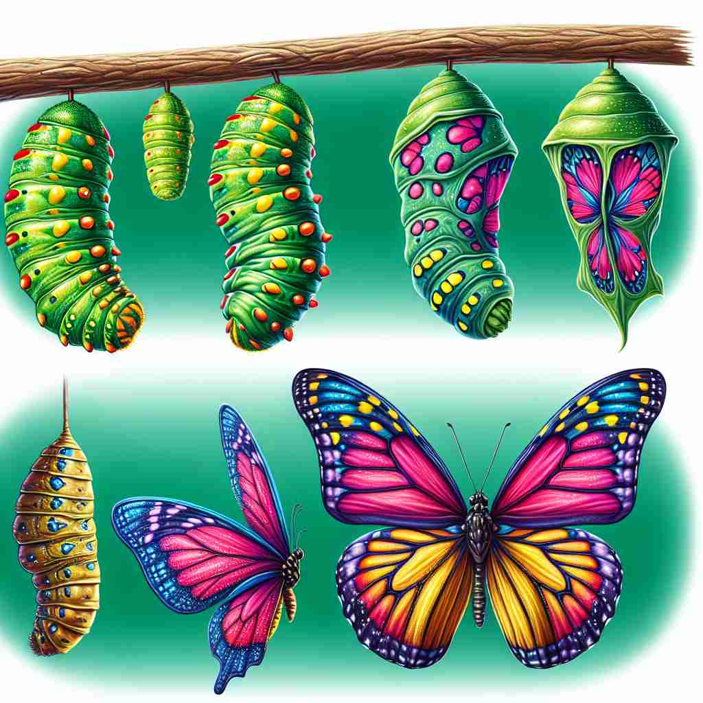

💬 The transformation of a caterpillar into a butterfly is amazing.

💬 The butterfly transformation is a beautiful example of nature's changes.
🔈 [trænsfə'meɪʃ(ə)n][trɑːns-][-nz-]
🗝️ n. a complete change in the appearance, form, or nature of something or someone
🖼️ 想象一个春天的花园。冬天刚过，树木看起来光秃秃的，但随着阳光和雨水的滋润，树开始长出绿叶，花朵竞相开放，整个花园焕然一新。这种景象展示了'彻底改变'之意。
🔍 通过想象一个物体或实体从一种状态完全改变为另一种状态，你可以理解'transformation'的核心含义。无论是蝴蝶的蜕变、戏剧场景的转换、数学表达式的转化，还是组织的革新，都体现了这种彻底的改变。记住这个核心概念，你就能轻松理解和记忆'transformation'在不同领域的应用。
💬 The transformation of a caterpillar into a butterfly is amazing.
💬 The butterfly transformation is a beautiful example of nature's changes.
🌳 由前缀 "trans-"（跨越、改变）加上词根 "form"（形状）和名词后缀 "-ation" 组成，表示 "转换，变化"。
💡 记忆 "transformation" 时，可以联想成 "跨越形状的变化"，即形状或形式的改变。将 "trans-" 与跨越、改变联系起来，更容易理解其在不同单词中的应用。
🗝️ n. a sudden dramatic change of scene in a play or film
🖼️ 在剧院里，一出戏剧正在上演。舞台从典雅的客厅场景迅速转变为一场激烈的战斗，灯光、音效立刻变得紧张而炫目。这种快速且惊人的变化体现了'戏剧性的场景转换'含义。
💬 The stage underwent a rapid transformation from a bedroom to a forest.
❓ 类比于物体的完全改变，应用于戏剧或电影场景的突然变化
🗝️ n. a process by which one figure, expression, or function is converted into another of similar value
🖼️ 在一个数学课堂上，老师正在讲解代数。他将一个复杂的代数表达式转化为一个简单的等值方程，帮助学生理解问题的本质。这演示了'将一种表达转化为另一种相似值表达'的过程。
💬 The mathematician applied a Fourier transformation to the complex equation.
❓ 在数学中，表示一种形式或表达方式的完全改变，但保持等价关系
🗝️ n. a marked change in form, nature, or appearance in cells or tissues
🖼️ 在科学实验室里，研究人员从显微镜下观察细胞的变化。随着药物的引入，癌细胞开始减小并恢复到健康状态，显示出细胞的'显著变化'。
💬 The oncologist studied the malignant transformation of the cells.
❓ 生物学中细胞或组织的显著改变，体现了完全改变的核心含义
🗝️ n. a thorough or dramatic change in the form, outward appearance, or character of an organization or society
🖼️ 一个大型企业在新管理层的领导下，进行了彻底的改革，企业文化、运作方式和品牌形象都焕然一新。这种变化展示了'组织或社会的彻底变革'。
💬 The company underwent a digital transformation to stay competitive in the market.
❓ 将完全改变的概念应用于组织或社会的变革